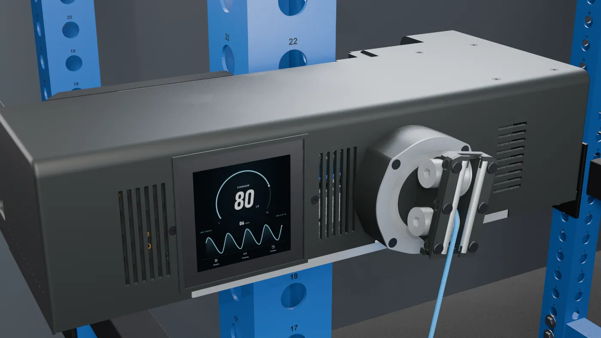
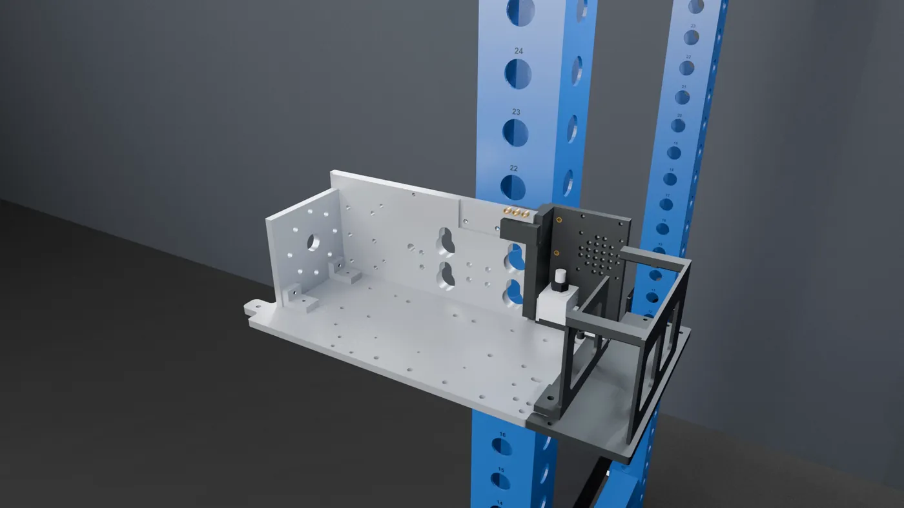
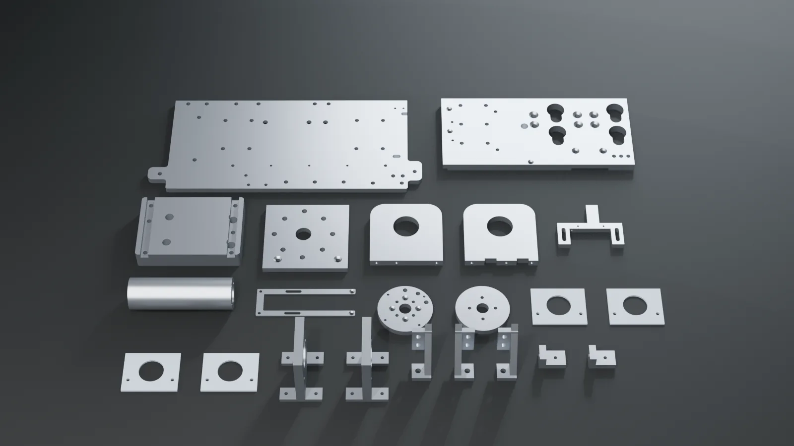
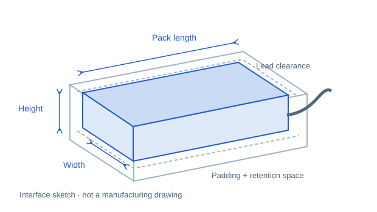
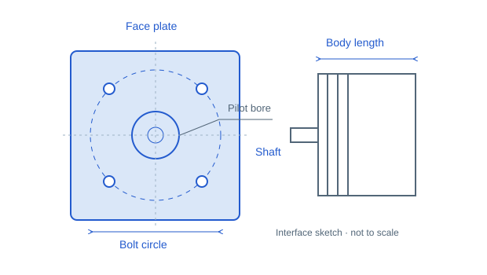
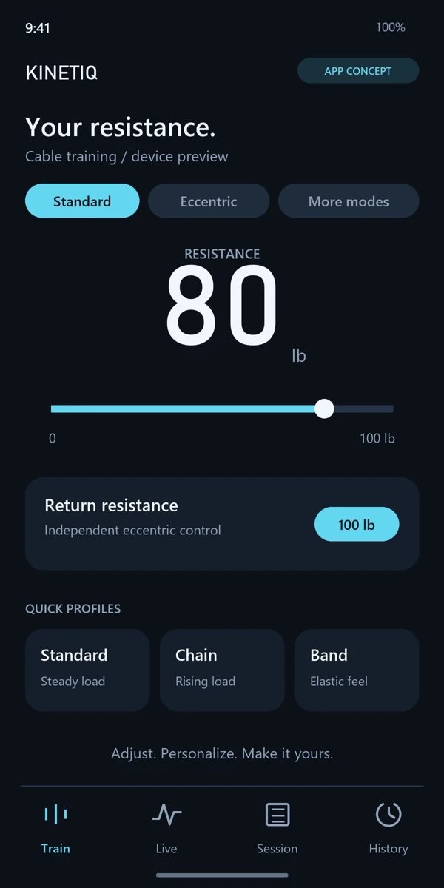

CAD & build files
STEP models, plate profiles, print files and editable CAD, released together.
Release plan ↓Open hardware · in development
One aluminum frame, five ways to drive it, from $1,123 in parts for the Lite build (you cut the metal and print the plastic parts). Compare the builds and their full parts lists, see the build order, and see what gets released once the prototype is tested.
The CAD, build files and software are released together after the physical prototype is built and load-tested.

Build it. One frame, five drives.
Understand it. See inside the mechanism.
Adapt it. Your motor. Your battery.
Where the project stands
The design is complete in CAD and the printed fit test is done. The aluminum prototype is being built now. Files are released once it has been tested.
STEP models, plate profiles, print files and editable CAD, released together.
Release plan ↓Touchscreen app, Pi setup, Teensy control firmware and the phone app.
The app concept ↓The current build sequence, confirmed step by step on the prototype.
Read the build order ↓How it goes together
A bolted 6061 aluminum frame carries every load; nothing is welded. Printed end pieces, the level-wind, the exit and the covers mount to it. The preview below follows the build animation; the chapters give the full order.

From the Blender build animationBuild preview · 01 / 06
The base, motor face and rear plates form the structure.
Illustration of the design. The build order is a draft until the prototype confirms it.
See how it comes together
Follow the rope, the drivetrain and the build, then the motor and battery options and the phone app concept. Design previews: physical validation is still ahead.
Product + build + app concept · about a minute · Download film
A closer look
The drivetrain from different angles: drum, level-wind, exit and electronics, taken from the animation.

Plan before you order
Pick a build to see its parts list. Parts are listed in order of importance: motor and controller first, adhesives last. Edit any price to use your own quote; your changes stay in this browser.
The main list, in purchase packs, including the 6061 aluminum to cut the frame yourself (CNC or laser, a drill and taps) and print the plastic parts. Not in this total: the accessory list below, tax, delivery, tools, labor and the rack. No CNC? Having the metal cut for you replaces the aluminum line (below). Estimates are not supplier quotes.
| # | Part / purchase unit | Qty | Unit price | Subtotal |
|---|
“Source price” is a price checked at the linked supplier. “Recorded price” is from the project’s sourcing notes. Everything else is a planning estimate.
Things many builders already have: wire and terminals, filament, screws, nuts, inserts, metal stock and setup items. Buy only what is missing. Not in the total above.
| Item | Qty | Unit price | Subtotal |
|---|
Realistic ranges for having every metal part cut and machined for one machine. Nothing is welded: the few holes in plate edges are drilled and tapped by hand through printed guides. Prices depend on the shop, the quantity and the lead time, so get quotes. This replaces the aluminum line in the total above. Ready-made metal kits are planned after testing: join the kit waitlist.
| Item | Qty | Typical cost |
|---|
Make the parts
Nothing here is a download yet. The CAD and every build file are released together, with the confirmed parts list and build instructions, once the prototype has been built and load-tested.
After testing The files are held back until the design is proven on real hardware, so nobody builds from an untested revision.

The laser-cut, tapped and countersunk 6061 plates, the machined bearing holders and brackets, and the drum and rack side ready to bolt together, made by the KINETIQ maker. Printed-part sets and complete machines may follow.
Not for sale yet. Kits open only after the prototype passes load testing.
Join the kit waitlistMake it yours
The design is built to be adapted: the battery bay and the motor face are the two interfaces most builders will change. The editable CAD comes with the verified release.

The reference uses two 5S packs in series (10S, 42 V fully charged). A pack that fits is not automatically electrically compatible.

The drive is direct: cable force ≈ motor torque ÷ effective drum radius. A different Kv or a larger motor does not by itself make a safe resistance rating.
Your gym. Your interface.
The phone interface from the film. The app and programs are released after testing; these screens show the intended experience.
Adjust the load, choose a resistance profile and configure return resistance from your phone.
The built-in screen keeps resistance, the rep graph and essential controls close. The Bluetooth companion is planned for deeper settings and training history.

Resistance, rep graph, modes and essential controls.
Raspberry Pi program & setupMachine control, position limits and motor-driver communication.
Teensy program & configurationBluetooth settings, workouts, profiles and training data.
App & connection setupThe ODrive is a third-party controller with its own firmware and terms, separate from the project’s application code.
Help turn the design into tested hardware
The CNC machine is already in the workshop. Support now goes into building, testing and improving the prototype, and into making the machine easier for others to build.
Parts, aluminum stock and the revisions that come out of load testing, measurement and real training.
Clear build instructions and videos, fit coupons, test jigs, and help for the people building their own.
Project support is a voluntary contribution, not a product order or a kit pre-sale. Progress and test results are shared as the build continues.
Open hardware, once it is proven
Kinetiq Gym is released as open hardware once the design is verified on the physical prototype. Anyone will be able to build it, change it and share their changes under the licences below.
Until then the public repository holds this website, the documentation and the renders. Contributions open with the verified release: there is no tested design to contribute to yet.
For the verified release:
Hardware: CERN-OHL-S-2.0
Documentation: CC BY-SA 4.0
Software: GPL-3.0
The KINETIQ and Kinetiq Gym names and logo are not licensed: only the project's maker sells kits and machines under them.